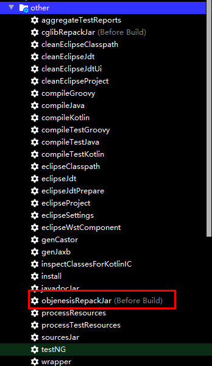

Spring源码环境搭建
环境搭建
Spring版本：5.0.21.BUILD-SNAPSHOT
IDEA版本：2019.3 U
Gradle版本：4.4.1
AspectJ版本：1.9.0
1. Fork自己的Spring源码仓，便于注释与调试
2. 安装Gradle
2.1 从Gradle官网下载gradle安装包 网址https://gradle.org/releases/
2.2 解压

2.3 配置环境变量
2.3.1 Windows环境


2.3.2 MacOs环境
1 | |
2.4 打开目录行工具，输入gradle -v，能看到gradle的版本信息表示安装已经成功

3. 导入Spring源码
3.1 从github拉取代码到本地
3.2 导入项目

3.2.1 解决导包问题
spring为了避免与cglib和objenesis冲突，将cglib和objenesis相关的包重新repack到org.springframework.cglib和org.springframework.objenesis包中，这部分的代码没有包含到源码当中。构建之前，需要先build这两个包。可以通过添加Gradle任务来解决：
在右侧的Gradle面板Spring -> Tasks -> other -> cglibRepackJar


激活任务

默认仓库网速下载较慢，添加阿里镜像仓库。

1 | |
重新构建项目（构建时间较长）

4. 创建测试模块
为了方便编写测试spring的代码，在spring-framework单独新建一个模块my-test
右键spring-framework项目->New->Module…

输入ArtifactId: my-test

添加依赖：
api(project(":spring-context"))为了能让my-test自动导入相关的依赖，在Gradle面板中右键spring节点

在my-test模块中编写程序测试
创建
MyApplication1
2
3
4
5
6
7
8
9
10
11
12
13
14package com.geekjk;
import org.springframework.context.ApplicationContext;
import org.springframework.context.support.ClassPathXmlApplicationContext;
public class MyApplication {
public static void main(String[] args) {
ApplicationContext ac = new ClassPathXmlApplicationContext("classpath:applicationContext.xml");
Hello hello = (Hello)ac.getBean("hello");
hello.sayHello();
}
}在resources目录下新建
applicationContext.xml1
2
3
4
5
6
7
8<?xml version="1.0" encoding="UTF-8"?>
<beans xmlns="http://www.springframework.org/schema/beans"
xmlns:xsi="http://www.w3.org/2001/XMLSchema-instance"
xsi:schemaLocation="http://www.springframework.org/schema/beans http://www.springframework.org/schema/beans/spring-beans.xsd">
<bean id="hello" class="com.geekjk.Hello"></bean>
</beans>新建
Hello类
1
2
3
4
5
6
7
8
9package com.geekjk;
public class Hello {
public void sayHello() {
System.out.println("Hello, Spring!");
}
}- 运行
MyApplication，可以看到控制台输出：Hello, Spring!
至此整个环境算是搭建好了,可以开始简单愉快的源码阅读之旅了。
书籍《Spring源码深度解析（第2版）》 作者郝佳
本博客所有文章除特别声明外，均采用 CC BY-SA 4.0 协议 ，转载请注明出处！